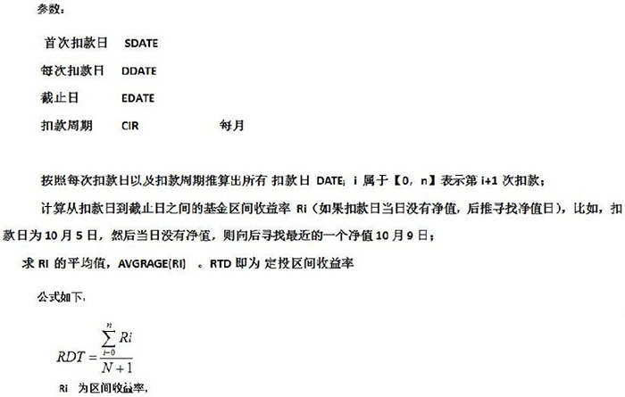
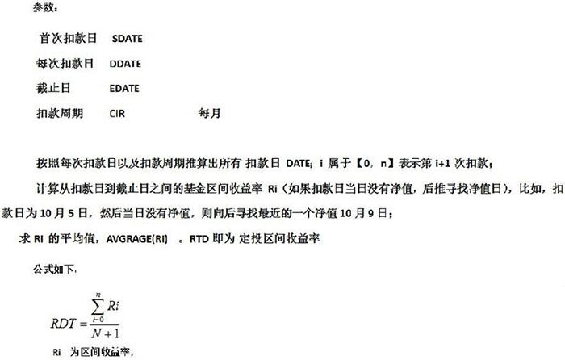

基金名词解释
1.基金净值
基金净值，是指每个营业日根据基金所投资证券市场收盘价所计算出的基金总资产价值，扣除基金当日之各类成本及费用后，所得到的就是该基金当日之资产净值。除以基金当日所发生在外的单位总数，就是每单位基金净值。
2.累计净值
基金累计净值为单位净值与基金成立以来累计分红派息之和，它属于一个参照值。
举例说明，2002年7月2日某基金单位净值是1.0486元，2004年4月份派发的现金红利时每份基金单位0.025元，则累计净值=1.0486+0.025=1.0736元。
补充：拆分后基金累计净值的计算
T日基金份额累计净值=（T日基金份额净值+拆分后份额分红金额）×拆分比例+拆分前份额分红金额。
3.万份收益
万份收益：货币基金万份收益是指持有1万份的货币基金能获得多少收益，一般每个工作日晚上公布当天的万份收益，如果是遇到周六日或者节假日，一般货币基金万份收益在节假日后2个工作日公布，一般周六日的收益会合并公布。
4.七日年化收益
七日年化收益率是指用最近七天(自然日)货币基金的每万份收益的平均收益折算出来的年收益率，并不是货币基金七天的收益。 七日年化收益率的计算公式为：{(7日总收益/7)*365/10000}*100%
5.基金的开放日
所谓开放日指基金契约规定的投资者可以在销售网点办理基金申购、赎回交易业务日期。
6.未知价原则
“未知价原则”：除了基金首次发行时认购价格确定为1.00元外，开放式基金的买卖通常是采取“未知价法”，即投资者提交委托申请时，并不知道其基金净值。所以，投资者按照金额进行申购（申购多少钱的基金）、按照份额赎回（赎回多少份的基金），基金交易时按照T日的净值成交，T＋1确认交易结果。
7.什么是T日
T日是指开放式基金销售机构在规定时间受理投资者申购、转换、赎回或其它业务申请的工作日。T日以股市收市时间为界，每天15:00之前提交的交易按照当天收市后公布的净值成交，15:00之后提交的交易将按照下一个交易日的净值成交，比如周一15:00前提交的交易，以T日(周一)的净值成交，T+1(星期二)确认交易。需特别注意的是：周末或节假日前最后一个工作日15:00后到节后第一个工作日15:00前为同一个工作日。比如星期五15:00之后提交的交易将视为下星期一的交易，T日为下星期一，以T日的净值成交，T+1(下星期二)确认交易。
8.基金认购
若在开放式基金的发行期内购买，称为认购。
投资者在份额发售期内已经正式受理的认购申请不得撤销。对于在当日基金业务办理时间内提交的认购申请，投资者可以在当日15:00前提交撤销申请，予以撤销；15:00后则无法撤销申请。
认购资金在募集期间发生的利息收入按银行活期存款利率（税后）计算。该利息收入在认购期结束时在代扣利息税后，折合成基金份额，归投资人所有。利息转份额以基金注册登记机构的记录为准。我司基金在认购期间产生的利息是计算到募集期最后一天的，募集期结束后的第一天开始到正式公告基金合同生效，这段时间不再计算利息。
场内认购单笔最低认购份额为1000份，超过1000份的须为1000份的整数倍，且每笔认购最大不超过99,999,000份基金份额。LOF基金募集期间对单个基金份额持有人最高累计认购份额不设限制。
场内按份额认购，认购款项在募集期间产生的利息将折算为基金份额归基金份额持有人所有，其中利息转份额以基金注册登记机构的记录为准。利息折算的份额保留至整数位（最小单位为1份），余额计入基金财产。
9.基金申购
基金封闭期结束后，您若申请购买开放式基金，习惯上称为基金申购，以区分在发行期内的认购。一般基金申购是T+1个工作日确认，T+2个工作日可以查询确认结果。
认购申购费及份额计算
1)开放式基金的前端申购费用及份额计算方法如下：
净申购金额 = 申购金额/（1 + 申购费率）
申购费用 = 申购金额 - 净申购金额
申购份额 = 净申购金额 / T日基金份额净值
假如投资者投资50,000元认购某开放式基金，假设申购费率为1％，当日的基金单位净值为1.1688元，其得到的份额为：
净申购金额=50,000/(1+1%)=49504.95元
申购费用=50000-49504.95=495.05元
申购份额=49504.95/1.1688=42355.36份
2)后端申购费的计算公式
后端申购费=申购金额×对应费率
（部分赎回时，后端申购费=赎回份额×申购当天净值×对应费率）
3)拆分后的基金后端申购费的计算
拆分后的基金后端申购费=赎回的份额÷拆分比例×申购日基金份额净值×对应的后端申购费率
4)红利转投份额的申购赎回费计算：
不论是前段收费还是后端收费模式下，红利再投资份额没有申购费。
10.封闭建仓期
基金成功募集足够资金宣告成立后，会有一段不接受投资者赎回基金单位申请的时间段，称之为基金的封闭期。封闭期是为了让基金经理将募集来的资金根据证券市场状况完成初步的投资安排。根据《开放式证券投资基金暂行办法》规定，基金封闭期不得超过3个月。
11. 基金赎回
若您申请将手中持有的基金单位按公布的价格卖出并收回现金，习惯上称之为基金赎回。
一般基金赎回是T+1个工作日确认,T+2个工作日可以查询确认结果。
赎回到账时间，一般货币基金为T+2~T+7个工作日，其他基金产品一般为T+4~T+7个工作日。
赎回费率随赎回基金份额持有年限的增加而递减，直至为零。
注：在货币基金结转日提交的赎回申请，未分配收益结转的份额有可能因为未被确认入账而导致此部分份额需单独赎回。
赎回费计算
1）开放式基金的赎回费用及金额计算方法如下：
赎回费用=赎回份额×T日基金单位净值×赎回费率
赎回金额=赎回份额×T日基金单位净值-赎回费用
假如投资者赎回50,000份基金单位，假设赎回费率为0.5％，当日的基金单位资产净值为1.1688元，其得到的赎回金额为：
赎回费用=50,000×1.1688×0.5％=292.20元
赎回金额=50,000×1.1688-292.2=58,147.80元
2）红利转投份额的赎回费计算：
不论是前段收费还是后端收费模式下，红利再投资份额一般持有超过两年赎回费为0。
巨额赎回
如果在某个基金开放日，基金净赎回申请（指赎回申请与申购申请总数之差）超过上一日基金总份数的10%，即认为发生了巨额赎回。巨额赎回意味着基金管理人必须卖出大量证券以变现，而大量卖出证券便可能牺牲收益，所以在处理巨额赎回时，基金管理人可以视情况选择正常赎回或者部分延期赎回。而投资人可以选择继续赎回或者放弃超额部分。
出现延期赎回现象时，投资人选择继续赎回，即在下一个交易日自动提交延期赎回份额的赎回申请，而放弃超额部分，即下一个交易日系统不会继续提交延期赎回份额的赎回申请，投资者可以根据需要选择是否再次赎回。
在处理巨额赎回时，基金管理人可以视情况选择：
正常赎回若认定完全有能力应付，则可按正常赎回程序执行，投资人利益不受影响。
部分顺延赎回若基金经理认为在一天内大量卖出证券比较困难或者对基金十分不利时，在当日接受赎回比例不低于基金总份额的10%的前提下，可以对其余赎回申请延期办理。对于当日的赎回申请，基金管理人会按单个帐户赎回申请量占赎回申请总量的比例，确定当日收力的赎回份额；未受理部分会延迟至下一个开放日办理，并以该开放日当日的基金资产净值为依据计算赎回金额，但投资者可在申请赎回时选择当日未获受理部分予以撤销。
发生巨额赎回并延期支付时，基金管理人应当通过邮寄、传真或者招募说明书会订的其他方式、在招募说明书规定的时间内通知基金投资人，说明有关处理方法，同时在指定媒体及其他相关媒体上公告；通知和公告的时间最长不超过三个证券交易所交易日。
12.基金转换及基金转换好处
基金转换是基金管理人向基金持有人提供的一种服务，是指投资者在持有一家基金管理公司发行的任一开放式基金后，可直接自由转换到该公司管理的其他开放式基金，而不需要先赎回已持有的基金单位，再申购目标基金的一种业务模式。
在一般情况下，投资者进行基金转换，可以在节约手续费的同时，达到无需赎回持有基金份额，而转而申购持有目标基金的目的。
选择基金转换时机
1)根据宏观基金形式把握转换时机
投资者要注重宏观经济以及各类金融市场的趋势分析。在经济复苏期，股市逐渐向好时，投资者应选择股票基金；当经济高涨，股市涨至高位时，投资者应逐步转换到混合型基金；当利率走高，经济过热，即将步入衰退期时，投资者可转换到债券基金或货币基金。
2)根据证券市场走势选择转换时机
股票市场经过长期下跌后开始中长期回升时，适宜将货币型、债券型基金转换为股票型基金，以充分享受股票市场上涨带来的收益；当股票市场经过长期上涨后开始下跌时，适宜将股票型基金转换为货币型或债券型基金，以回避风险。
3)根据具体基金的盈利能力选择转换时机
随着基金规模的不断壮大，大的基金公司下一般都会有几只不同风格的配置型基金和股票型基金，表现有差异也是必然会出现的事情，当目标基金的投资能力突出，基金净值增长潜力大的时候就可以考虑将手中表现相对较差的基金转出。
13.基金分红
基金分红是指基金将收益的一部分以现金或折算成基金份额的形式派发给投资人，这部分收益原来就是基金份额净值的一部分。
开放式基金的默认分红方式为现金红利(除货币基金只有红利转投和场内交易的LOF基金只有现金分红)，投资人可以在购买时自行设定或在确认份额后将其修改为“红利再投资”。
按照《证券投资基金运作管理办法》的规定，封闭式基金的收益分配，每年不得少于一次，封闭式基金年度收益分配比例不得低于基金年度已实现收益的百分之九十；开放式基金的基金合同应当约定每年基金收益分配的最多次数和基金收益分配的最低比例。
在权益登记日(R)之前申购能参与本次分红，在权益登记日当日申购不参与本次分红。在权益登记日之前赎回不能参与本次分红，在权益登记日当日赎回能参与本次分红。
R+2个工作日即红利发放日可查询份额或对这些份额进行赎回操作。红利再投份额持有时间从R+1日开始计算持有时间。
现金红利到账时间一般为R+2~R+7个工作日。
基金分红的现金红利及分红所得份额计算
1）若分红方式为现金分红：现金红利=持有的基金份额×分红比例。
2）若分红方式为红利再投资：红利再投资份额=(持有的基金份额×现金分红比例)÷权益登记日基金份额净值。
举个例子，广发强债基金第一次分红，每10份分红0.3元，权益登记日当天的基金份额净值为1.075元。假如客户持有10000份广发强债基金，那么该客户：
现金红利=10000份×0.03 =300元
红利再投资份额=（10000份×0.03）÷ 1.075元=279.07份。
14.转托管
指投资者将托管在某销售点的基金份额转到另外的销售点进行交易的行为。投资人在进行转托管时，可以是转出其拥有的同一家基金公司的一只或多只开放式基金，也可以是同一只基金的部分或全部份额。
15.基金定投
基金定投是定期定额投资基金的简称，是指在固定的时间(如每月8日)以固定的金额(如500元)投资到指定的开放式基金中，类似于银行的零存整取方式。
一般而言，基金的投资方式有两种，单笔投资和基金定投。基金定投是指在固定的时间，以一定的金额投资到指定的开放式基金中，类似于银行的零存整取方式。
一次性买基金，一般最少1000元起。
基金定投，部分银行最少每个月100元起，根据销售渠道不同起点金额也不同。
由于基金定投起点低、方式简单，所以它也被称为“小额投资计划”或“懒人理财”。
普通投资者很难适时掌握正确的投资时点，常常可能是在市场高点买入，在市场低点卖出。而采用基金定期定额投资方式，不论市场行情如何波动，每个月固定一天定额投资基金，由银行自动扣款，自动依基金净值计算可买到的基金份额数。这样投资者购买基金的资金是按期投入的，投资的成本也比较平均。
基金定投优势
1)自动扣款，省心省力：投资者在设置好定投扣款日期和每次扣款金额后，系统自动扣款，投资者只需确保银行卡内有足够的资金即可，省去了去银行或者其他代销机构办理的时间和精力。
2)分批投资，分散风险：资金是分期投入的，投资的成本有高有低，长期平均下来比较低，所以最大限度地分散了投资风险。
普通投资者很难适时掌握正确的投资时点，常常可能是在市场高点买入，在市场低点卖出。而采用基金定投的方式，不论市场行情如何波动，每个月固定一天定期投资基金，由银行自动扣款，自动依基金净值计算可买到的基金份额数。这样投资者购买基金的资金是按期投入的，投资的成本也比较平均。
举例来说，若您每隔两个月投资100元于某一只开放式基金，1年下来共投资6次总金额为600元，每次投资时基金的申购价格分别为1元、0.95元、0.90元、0.92元、1.05元和1.1元，则您每次可购得的份额数分别为100份、105.3份、111.1份、108.7份、95.2份和90.9份，累计份额数为611.2份，则平均成本为600÷611.2=0.982元，而投资报酬率则为(1.1×611.2-600)÷600×100%=12.05%，高出一次性投资近2.05个百分比。
基金定投在市场点位上升、基金净值随之升高时，买入的份额就会相应减少；相反，在市场点位下降、基金净值也随之下降时，同样金额买入的基金份额就会增加，无论市场价格如何变化总能获得一个比较低的平均成本，因此定投可平抑市场波动。只要选择的基金有整体增长，投资人就会获得一个相对平均的收益，不必再为入市的择时问题而苦恼。
3)复利增长，收益可观：每月将闲散资金做定投，既可以强制储蓄，利用定投的复利效应，更能够“聚沙成塔”。例如，每月投入3633.5元，如果定投年化收益15%，那10年后，累计投入本金43.6万，却可以收获100万元。
基金定投诀窍
1)越早定投，越早受益，是为诀窍一。投资者越早开始办理基金定投，就越能在成功的道路上领先一步。定投起点越早，复利效果越大。
2)长期坚持，分散风险，在市场下跌时不要盲目终止定投是为诀窍二。只有坚定不移进行基金定投，才能有机会享受长期复利带来的神奇效果。时间的价值对于基金定投可谓尤其珍贵，惟有坚持如一，除此无它。
3)后端收费，回报更佳，此乃诀窍三也。本杰明？富兰克林说过：“不要小看一点点的费用，渗漏的水滴足以淹没整艘船只！”可见费用成本对长期收益的影响不可低估。基金定投是理财长跑，短时间内后端收费定投与前端收费定投到期收益虽然差别不大，长时间累加却会产生想象不到的明显差异。定投期限越长，总收益率差异越大。投资者在选择定投目标时，后端收费基金将有望提供长时间复利发酵后的更高回报。
定投基金份额持有时间
一般定投所得的基金份额持有时间是分月计算的。例如2011年1月23日定投嘉实300指数所得份额为200份，2011年2月23日定投嘉实300指数所得份额为180份，在2012年2月2日提交该基金份额全部赎回申请，那么其中2011年1月23日定投嘉实300指数所得份额为200份持有时间满一年，2011年2月23日定投嘉实300指数所得份额为180份持有时间不到一年。
基金定投公式

16.非交易过户
非交易过户是指因继承、捐赠、司法强制执行以及其它特殊原因情况下的将基金份额从一个投资者的基金账户过户到另一个投资者基金账户的非正常交易行为。
注意：非交易过户的捐赠仅指基金持有人将其合法持有的基金份额捐赠给福利性质的基金会或社会团体，而不能捐给需要帮助的个人。
到基金公司办理自建TA账号的非交易过户费用根据各家公司而定，到中登办理98帐号的非交易过户需收取200元手续费。
17.基金定投公式

18.分级基金相关概念
1、分级基金的交易方式：
分级基金结构一般分为母基金与A、B两类子基金，份额结构由母基金、A、B三种份额或A、B两种份额组成，其中有份额的母基金按照净值在场内或场外进行申购赎回，一般不上市交易。子基金分为场外申赎型和上市交易型，其中场外申赎型子基金一般按照约定的运作周期开放申购和赎回，而上市交易型子基金只能通过证券账户按即时交易价格在二级市场上买卖，不能单独按净值申购赎回。具体交易方式参见分级基金运作方式。
2、分级基金的运作方式：
运作方式分类：
股票型：
1.A、B封闭上市，母基金有份额可申购(一开两封)
2.A可申购、B封闭上市，母基金无份额不可申购(一开一封)
债券型：
1. A、B封闭上市，母基金有份额可申购(一开两封)
2.A可申购、B封闭上市，母基金无份额不可申购(一开一封)
3.A、B可申购，母基金无份额不可申购(两开)
4.A、B封闭上市，母基金无份额不可申购(两封)
3、分级基金净值：
母基金净值=A份额净值*A份额所占比例% B份额净值*B份额所占比例%
B份额净值是母基金净值扣除A份额净值后的剩余净值，即：
B份额净值=(母基金净值-A份额净值*A份额所占比例)/B份额所占比例
由于B份额的杠杆特性，当母基金净值增长时，B份额净值涨幅高于母基金涨幅；当母基金净值下跌时，B份额净值跌幅高于母基金跌幅。
通常A份额会约定基准年化收益率和定期折算等条款，场外申赎型A份额还会约定固定的封闭运作周期，滚动开放申赎；上市型A份额按二级市场即时交易价格进行买卖，不能按净值申购赎回，因此该类A份额价格对于净值会有一定偏离，偏离率为A份额的折价率。
A份额折价率=(A份额净值-A份额价格)/A份额净值，
场外申赎型B份额通常也有固定的封闭运作周期，上市型B份额同上市型A份额，折价率如下：
B份额折价率=(B份额净值-B份额价格)/B份额净值
4、分级基金的杠杆
融资型分级：
份额杠杆= (A份额份数 B份额份数)/B份额份数
净值杠杆=(母基金净值/B份额净值)×份额杠杆
价格杠杆=(母基金净值/B份额价格)×份额杠杆
多空型分级：
份额杠杆=约定系数(如2倍、-1倍、-2倍等)
净值杠杆=(母基金净值/B份额净值)×份额杠杆
价格杠杆=(母基金净值/B份额价格)×份额杠杆
5、收益分配模式
收益分配模式分类：
(1) 融资分级：基金在扣除A份额(优先份额)应计收益后的全部剩余收益归B份额(进取份额)所有；
(2) 增强收益：基金分配A份额(优先份额)约定收益后，基金份额净值超过某一值或基金份额总收益率超过某一值时，再次将超出部分基金份额净值按比例分配给A份额(优先份额)；
(3) 融资、增强混合：基金分配A份额(优先份额)约定收益后，A份额(优先份额)与B份额(进取份额)按比例共同参与剩余收益的分配；
(4) 盈利分级：约定年阀值，两类子份额分别获取以年阀值为界的高低比例分成；
(5) 类可转债：当分级份额净值达到某一值时，A份额(优先份额)与B份额(进取份额)同等增长，否则只获得期初净值1元。
6、分级基金套利
配对转换有分拆和合并两种操作方式。是否可配对转换，是分级基金是否可以实现套利的基础。
深圳证券交易所折溢价套利：
折价套利：当A份额与B份额的交易价格的合并价格小于母基金净值时，存在折价套利机会。投资者可以在二级市场上按比例买入分级基金A、B份额，在T+1日合并为母基金，在T+2日赎回母基金。折价套利由于母基金份额赎回是在买入A、B份额之后的第T+2日实现，因此在2日之内要注意分市场可能存在的下跌风险使得A、B份额价格和母基金净值相较T日下降，使得套利空间收窄。
溢价套利：当A份额与B份额的交易价格的合并价格大于母基金净值时，存在溢价套利机会。投资者可以在一级市场申购母基金，在T+2日将母基金拆分为A、B两个份额，在T+3日在二级市场上卖出A、B两个份额。溢价套利由于A、B份额卖出是在申购母基金份额之后的第T+3日实现，因此在3日之内要注意市场可能存在的下跌风险使得A、B份额价格和母基金净值相较T日下降，使得套利空间减小。
此外，可以利用股指期货空单对冲市场系统性下跌风险。但由于基金所跟踪指数不一定为沪深300指数，所以需要参考所购基金与沪深300指数的相关系数，依照相关系数交易空单份额，但要注意这种情况下股指期货空单不能够完全覆盖基金所具有的市场系统性风险。
除此之外，注意申赎和买卖时的交易费用也是套利成本之一。
上海证券交易所折溢价套利：
上海证交所分级基金折溢价套利可以在买入A、B份额或申购母基金的当日进行合并或拆分，并且在当日可以赎回或卖出，但分拆、合并申报数量应当为100份的整数倍，且不低于50000份(以母基金份额计).
上交所购买的基金拆分、合并可以在一天之内完成，降低了市场下跌风险而带来套利空间缩小的可能性，但投资者依然要注意市场系统性风险带来的影响。
7、分级基金的折算
定期折算：
分级基金以定期折算的方式进行分红，在每个约定周期将A份额或A、B、母基金三种份额净值超过1元的部分定期折算为母基金份额。除此之外，还有当B份额净值大于1时，将三种份额均折算为1元，否则仅对A份额进行折算的定期折算方式。
不定期折算：
分级基金的不定期折算，又称作到点折算，是分级基金B份额杠杆特性和控制A份额风险的一项条款。不定期折算可分为向上折算和向下折算，一般分别以母基金净值达到某一值和B份额净值跌至某一值为触发条件。
折算后，A份额和B份额净值超过1元的部分均折算成为母基金份额归给投资者。向上折算可使因净值上涨而杠杆降低的B份额恢复初始杠杆；向下折算可以使因B份额净值不断下跌而无法保障A份额收益的风险得到控制，使A份额持有者提前收回大部分本金和收益。
8、到期日
永续类分级基金没有到期日。有期限的分级基金，到期后基金终止或转型折算，一般转型为LOF基金，分级基金各份额根据基金合同规定终止或转型。
9、分级A份额的约定基准年化收益率、下期估算年化收益率、隐含收益率、修正隐含收益率
A份额的约定基准年化收益率一般为某一官方基准利率(如中国人民银行一年期定期存款利率)向上浮动一定值。由于基准利率会有调整，根据已调整的基准利率，可估计出A份额的未来预期收益率，为下期估算年化收益率。
A份额的隐含收益率是上市型A份额特有的指标，永续型A份额的隐含收益率可理解为其即期收益率，期限型为到期收益率，根据约定基准年化收益率、期限型剩余年限、A份额净值和交易价格计算得出。
A份额的修正隐含收益率是根据下期估算年化收益率修正过的隐含收益率。
10、分级B份额的融资成本
B份额的融资成本是B份额由于向A份额融资所产生的费用。B份额负担A份额的约定收益和基金整体的运作费用，所以B份额的融资成本包括A份额的约定收益和基金整体的运作费用，即B份额如果不涨不跌所需要付出的最低成本。
19.什么叫巨额赎回
巨额赎回的定义是在单个开放日，基金净赎回申请超过上一日基金总份额的10%时，称为巨额赎回。比如某只基金上一日的基金总份额为1000份。今日申购了100份，赎回了210份。那么净赎回为110份，超过了上一日基金总份额1000份的10%，则发生了巨额赎回。
如果出现了巨额赎回，基金管理人可选择两种方式进行处理：
(1)全额赎回：当基金管理人认为有能力兑付投资者的赎回申请时，按正常赎回程序执行。
(2)部分延期赎回：基金管理人将以不低于基金份额总份数10%的份额按比例分配投资者的申请赎回数；
投资者未能赎回部分，投资者在提交赎回申请时应做出延期赎回或取消赎回的明示。注册登记中心默认的方式为投资者取消赎回。选择延期赎回的，将自动转入下一个开放日继续赎回，直到全部赎回为止；选择取消赎回的，当日未获赎回的部分申请将被撤消。需要提醒的是延期的赎回申请与下一开放日赎回申请一并处理，并无优先权并以该开放日的基金份额净值为基础计算赎回金额。
20.为什么基金会暂停交易
由于某种特殊原因(例如基金封闭期、分级基金母基金不定期折算或QDII基金因国外法定节假日等其他原因)导致基金单方面暂停申购或暂停赎回，或者是双向的暂停交易。此时，基金开放时间以该基金公告为准。
21.什么是强增（强减）
基金公司遇到有基金拆分、重仓股票停牌、份额升降等事件时，为更正持仓信息，基金公司对持有者基金的份额执行(强)增加、或(强)减少的调整。一般货币A、B级是根据持有的基金份额划分，如果持有的货币基金份额达到B级规定，系统会自动将货币A进行调减，同时货币B相应自动调增；反之当持有份额少于货币B级规定，则将货币B自动调减为货币A。
22.怎么买卖保本基金才能保本
一般来说，保本基金是指在规定的投资期限内，对投资者所投资的本金提供一定比例保证的基金。这种基金确实叫保本基金，但事实上它是有一些限制条件的。比如在期限上，并不是什么时候买这种基金都是保本的，这种基金一般都会设立一个保本周期，如国内的保本基金以3 年保本的居多，也就是说，投资者只有在基金的认购期或者规定的申购期购买，并且持有至一个保本周期到期才能享受保本的待遇，如果中途赎回，则基金公司不承诺保本。在保本周期到期后没有及时卖出的自动进入下一保本期，所以投资者需要在保本期到期后及时卖出。
23.什么是债券型基金的杠杆比例
债券型基金想要放大收益，加杠杆是必不可少的，债券型基金普遍会通过债券抵押正回购的操作加上杠杆。
比如，一只债券基金持有有100万公司债债券，债券折算率为0.75，那一开始可以将手中的债券抵押出去获得7500张标准券，其中用7000张可以获得70万的资金买入债券，再次抵押可获得5250张标准券，可以再融资50万元买入债券，这个时候你手中就总共拥有220万债券和750张标准券。通过两次正回购，杠杆变成了2.2倍。
那这样操作的收益是多少呢？我们简单的算一下，以1年为期，假设债券的收益为7%，而正回购付出的利息平均为3%(和银行定期存款接近)，同时连续以7天的正回购套作。一年需要交易54次左右，那么交易手续费为(750000 500000)*0.00005*54=3375元，付出利息总计(750000 500000)*0.03=37500元，其总共的收益为2200000*0.07-3375-37500=135125元，年化收益13.512%，比原本7%的收益高出不少，这就是杠杆的作用。
不过，在经过杠杆放大之后，对资金链的要求十分高，比如在季末资金面比较紧张的时候，由于对资金的需求放大，会急剧推高逆回购的利息，此外如果债券投资杠杆过高，到还钱的时候没能补上利息的话，就会出现爆仓的风险。
24.保本基金的保本模式
保本基金的保本模式分为：
一、保本金
保本金的基金是指，保本金额为基金份额持有人认购并持有到期的基金份额的净认购金额；或过渡期申购并持有到期的基金份额在折算日所代表的资产净值；或从上一保本周期转入当期保本周期并持有到期的基金份额在折算日所代表的资产净值。折算日指过渡期最后一个工作日(即下一保本周期开始日前一工作日).
二、保本金和利息
保本金和利息的基金是指，保本金额包括本金和利息的保本基金。利息指基金募集期基金份额净认购金额所产生的利息。一般以折算成基金份额归基金份额持有人所有的形式列入基金份额持有人的保本金额范围内。
三、保本金、利息和费用
保本金、利息和费用的基金是指，保本金包括本金、利息和费用的保本基金。其中，费用指认购费用或申购费用。
四、保本金和费用
此类保本基金一般是在基金保本期到期后转型成为的另一种保本基金，基金代码发生改变。这类基金一般只有过渡期而没有募集认购期，因此相应地就没有所谓的募集期所产生的利息。
五、超额保本
通常，超额保本的基金是指，保本金额包含基金份额持有人认购并持有到期的基金份额的投资金额加上额外收益；其后各保本周期的保本金额为过渡期申购并持有到期的投资金额加上额外收益，以及上一保本周期转入当期保本周期并持有到期的投资金额加上额外收益。
六、其他
以上未包含的其他模式。